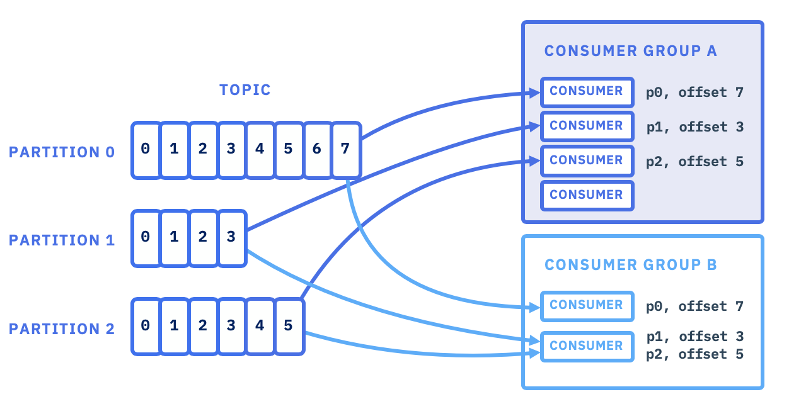
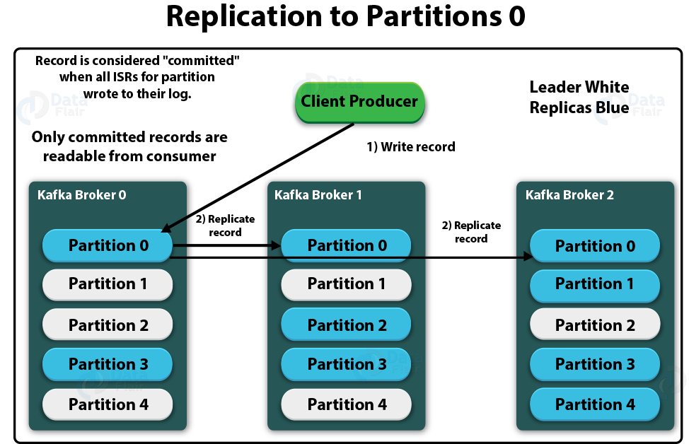

1. Introduction to Apache Kafka
Apache Kafka is an open-source, distributed event streaming platform designed for high-performance data pipelines, streaming analytics, data integrations, and mission-critical applications. It's optimized for ingesting and processing streaming data in real-time.
Event streaming is defined as "the practice of capturing the data in real time from event sources like databases, sensors, mobile devices, cloud services, and software applications in in the form of streams of events."
2. Key Features and Advantages of Kafka
Kafka boasts several powerful features that make it a robust solution for real-time data processing:
- High Scalability: Kafka is designed for horizontal scalability, allowing it to handle massive amounts of data by adding more hardware or nodes to a cluster without downtime.
- High Throughput & Low Latency: Throughput is "a measure of how many units of information a system can process in a given amount of time." Kafka can handle "millions of messages per second."
- Latency is "the delay in the network communication." Kafka achieves low latency (as low as 2 milliseconds max) by storing data in memory, enabling quick read and write operations.
- Distributed Systems: Kafka's distributed architecture ensures fault tolerance and reliability. Data is distributed across multiple nodes, reducing the risk of data loss.
- Publish-Subscribe Messaging System: Kafka operates as a pub-sub system where "producer can publish the messages or data to the topics and consumer subscribes to those topics to receive the data."
- Retention and Durability: Kafka offers configurable retention periods for messages, ensuring data durability over time. Data can be stored for a specified duration or size, allowing for data replay or reprocessing.
- Support for Stream Processing: Kafka provides a streaming platform for building real-time data pipelines and applications, with the Kafka Streams API enabling processing within its ecosystem.
- Connectivity and Integrations: Kafka supports connectors for seamless integration with various data sources and sinks, facilitating data transfer between systems.
3. Kafka Use Cases
Kafka is widely used across various industries for:
- Financial Transactions: Processing payments and financial transactions in real-time (e.g., stock exchanges, banks, insurance).
- Logistics & Automotive: Tracking and monitoring parts, shipments, and vehicles in real-time.
- IoT Data: Continuously capturing and analyzing sensor data from IoT devices and other equipment (e.g., factories, wind parks).
- E-commerce & Retail: Collecting and reacting to customer interactions in real-time (e.g., e-commerce, order processing, hotel/travel).
- Healthcare: Monitoring patients and predicting condition changes for timely treatment in emergencies.
- Data Integration: Connecting, storing, and making data available across different company divisions.
- Architectural Foundations: Serving as the foundation for data platforms, event-driven architectures, and microservices.
4. Kafka Key Components
Understanding these core concepts is crucial for working with Kafka:
- Kafka Clusters: A set of Kafka brokers working together. One broker acts as a controller to manage cluster metadata.
- Brokers: A Kafka server that stores data and serves clients. A Kafka cluster consists of multiple brokers for load balancing. Brokers are stateless and use replication for fault tolerance and data durability.
- Topics: A logical channel to which messages are sent and from which messages are consumed. It can have multiple partitions.
- Partitions: "Each topic is divided into one or more partitions, the basic unit of parallelism and distribution in the cough." Messages within a partition are ordered and assigned an offset for tracking.
- Partitions Offset: "A unique ID for each message in a partition. Consumers use offsets to
track read progress." Offsets are crucial for consumers to track their position, know which messages they've
consumed, and resume consumption from the last committed offset if they crash or restart.
An offset is a unique identifier for a message within a partition.
Kafka stores messages in partitions in a sequential log.
Each message in a partition has an increasing offset like 0, 1, 2, 3, ....
Consumers track offsets to know what message to read next.
props.put(ConsumerConfig.AUTO_OFFSET_RESET_CONFIG, "earliest");
| Offset | Description |
|---|---|
| Earliest | Starts consuming from the beginning of the partition (offset 0). |
| Latest (default) | Starts consuming only new messages (skip old). |
| Manual | You can explicitly seek to a specific offset in code. |
spring:
kafka:
consumer:
group-id: payment-group
auto-offset-reset: earliest # or latest
- Producers: A client that publishes (writes) data (messages/events) to one or more Kafka topics. Producers decide which partition to write to. Producers send messages asynchronously and serialize data into a byte format.
- Consumers: A client that subscribes (reads) messages from one or more Kafka topics. Can be
part of a consumer group for load balancing.
Consumers always read data from lower to higher offsets.
If a consumer reads from multiple partitions, message order is not guaranteed across partitions.
Consumers deserialize data from byte format into usable data structures.
Consumers are assigned to specific partitions for parallel processing and scalability.
Consumers acknowledge message receipt and commit offsets to ensure reliable, at-least-once message delivery.
- Acknowledgement Settings (acks) Producers can configure acks to control message delivery
durability and reliability:
acks=0: Producer sends data without waiting for acknowledgement. Possible data loss.
acks=1 (Default in Kafka 2.0+): Leader broker acknowledges receipt. Limited data loss possible if leader fails before replicas synchronize.
acks=all: Leader waits for all in-sync replicas to acknowledge before responding to the producer. No data loss.
- Message Keys partitions in a round-robin fashion. If a key is provided, messages with the same key are always sent to and stored in the same Kafka partition, ensuring order.
- Consumer Group
"Consumers are organized into consumer groups...where each group read from a topic." A consumer
group can
contain
multiple consumers, processing subsets of messages, which facilitates scalability and load
distribution.
Consumer Behavior with Partitions: Single Consumer, Multiple Partitions: A single consumer in a group will consume all partitions of a topic.
Multiple Consumers, Multiple Partitions (Consumers <= Partitions): Kafka auto-balances, assigning partitions to consumers for load distribution. Each partition is consumed by only one consumer within a group at a time.
Multiple Consumers, Multiple Partitions (Consumers > Partitions): All partitions will be consumed, and any excess consumers will sit idle.
Multiple Consumer Groups: Each consumer group independently consumes from the topic's partitions.
 - Leader/Follower Replications Each partition has one leader and multiple followers. Leaders handle all read and write requests for their partition, and followers replicate the leader's data. If a leader fails, a follower becomes the new leader. leaders perform all reads and writes to a particular topic partition. followers replicate leaders. 
5. Zookeeper and Kafka (Legacy vs. Current)
- Zookeeper (Legacy): Traditionally, Zookeeper acted as a distributed coordination service in Kafka, managing and coordinating Kafka brokers. It notified producers and consumers about new or failed brokers, facilitating tasks like metadata management, leader election, consumer group coordination, and configuration management. Kafka would get offset values from Zookeeper.
- Newer Versions (Kafka 3.3+): "Apache Kafka 3.3 replaces Zookeeper with the new care of consensus protocol," specifically Kaft (Kafka Raft metadata mode). In this model, "each broker will have a Quorum controller," which handles the reading and writing of events to a dedicated metadata topic within the Kafka cluster itself, eliminating the Zookeeper dependency.
6. Spring Boot Kafka Integration
The tutorial demonstrates how to integrate Apache Kafka with Spring Boot, focusing on setting up producers and consumers.
Prerequisites: Kafka needs to be installed and running (version 3.6.1 used, supporting Kaft).
6.1 Running Kafka with Kraft
Generate Cluster UUID: kafka-storage.sh random-uuid (generates a unique identifier for the cluster).
Format Log Directories: kafka-storage.sh format -t <UUID> -c <path_to_server.properties>
Start Kafka Server: kafka-server-start.sh <path_to_server.properties>
6.2 Producer Configuration and Service
Dependencies: Spring Web and Kafka dependencies are required.
<dependency>
<groupId>org.springframework.kafka</groupId>
<artifactId>spring-kafka</artifactId>
</dependency>
ProducerConfiguration Class: Defines three beans:
- ProducerFactory: An interface used to create Kafka producer instances, enabling consistent configuration across Spring Boot applications. It's configured with bootstrap.servers, key.serializer, and value.serializer.
- KafkaTemplate: Simplifies Kafka producer usage by providing a higher-level abstraction for common operations like sending messages (synchronously and asynchronously).
- NewTopic: Creates a Kafka topic with specified name, number of partitions, and replication factor.
@Configuration
public class ProducerConfiguration {
//ProducerFactory
@Bean
public ProducerFactory<String,String> producerFactory(){
Map<String,Object> configMaps= new HashMap<>();
configMaps.put(ProducerConfig.BOOTSTRAP_SERVERS_COMFIG,"localhost:9092");
configMaps.put(ProducerConfig.KEY_SERIALIZER_CLASS_COMFIG, StringSerializer.class);
configMaps.put(ProducerConfig.VALUE_SERIALIZER_CLASS_COMFIG, StringSerializer.class);
return new DefaultKafkaProducerFactory<>(configMaps);
}
//KafkaTemplate
@Bean
public KafkaTemplate<String,String> kafkaTemplate(){
return new KafkaTemplate<>(producerFactory());
}
//NewTopic
@Bean
public NewTopic paymentTopic(){
return new NewTopic("payment-topic",3,(short) 1);
}
}
| Port | Description |
|---|---|
| "payment-topic" | Name of the topic being created. In this case, the topic is called "payment-topic". |
| 3 | Number of partitions for the topic. This means the topic will be split into 3 partitions. Each partition can handle part of the data for parallelism and scalability. |
| (short) 1 | Replication factor. The number 1 (cast to short) means each partition will have 1 copy (no replication). Normally in production, this is ≥ 2 for fault tolerance. |
ProducerService Class: Autodires KafkaTemplate.
Includes methods to generate random payment transactions.
@Service
@Slf4j
public class ProducerService {
@Autowired
private KafkaTemplate<String,String> KafkaTemplate;
//generateRandomTransaction
public String generateRandomTransaction(){
String vendors[]={"Amazon","Paypal","Visa","mastercard"};
String vendor = vendors[ThreadLocalRandom.current().nextInt(vendors.length)];
double amount = ThreadLocalRandom.current().nextDouble(0.10,1000.0);
return "Vendor: "+vendor+"Amount $"+amount;
}
//SendPaymentTransactions Asynchronously
// @Schedule(fixedRate = 2000)
public void SendPaymentTransactionsAsynchronously(){
String transaction = generateRandomTransaction();
log.info("Sending payment transactions {}",transaction);
kafkaTemplate.send("payment-topic",transaction)
.whenComplete(((sendResult, throwable) -> {
if(throwable!=null){
onFailure(throwable);
}else {
onSuccess(sendResult);
}
}));
}
private void onSuccess(SendResult<String, String> sendResult) {
log.info("Received new metadata. \n" +
"Topic: {}, Partition: {}, Offset: {}, Timestamp: {}",
sendResult.getRecordMetadata().topic(),
sendResult.getRecordMetadata().partition(),
sendResult.getRecordMetadata().offset(),
sendResult.getRecordMetadata().timestamp());
}
private void onFailure(Throwable throwable) {
log.info("Error occurred while producing the message {}", throwable);
}
public String generateTransactionKey(){
return UUID.randomUUID().toString();
}
//SendPaymentTransactions-2)synchronously
@ScheduleoffixedRate = 2000)
public SendResult<String,String> SendPaymentTransactionsSynchronously() throws ExecutionException,
InterruptedException {
String transaction= generateRandomTransaction();
log.info("Sending payment transactions {}",transaction);
SendResult<String,String> sendResult = kafkaTemplate.send("payment-topic",generateTransactionKey(),transaction).get();
log.info("Received new metadata. \n" +
"Topic: {}, Partition: {}, Offset: {}, timestamp: {}",
sendResult.getRecordMetadata().topic(),
sendResult.getRecordMetadata().partition(),
sendResult.getRecordMetadata().offset(),
sendResult.getRecordMetadata().timestamp());
return sendResult;
}
}
Sending Messages:Asynchronously: kafkaTemplate.send(topic, key, value) returns a ListenableFuture. A whenComplete callback is used to process the SendResult (containing metadata like topic, partition, offset, timestamp) on success or handle exceptions on failure.
Sending Messages:Synchronously: kafkaTemplate.send(topic, key, value).get() blocks until the message is sent and returns the SendResult.
Scheduling: Uses @ScheduleoffixedRate = 2000) to send transactions every 2 seconds.
Specific Partition Sending: kafkaTemplate.send(topic, partition, key, value) allows explicitly specifying the target partition.
// Case 1: Send to specific partition, here 2
kafkaTemplate.send("payment-topic", 2, "txn123", "Rs 100 paid");
// Case 2: Send with key (Kafka decides partition using key hash)
kafkaTemplate.send("payment-topic", "txn123", "Rs 200 paid");
// Case 3: Send without key (Kafka round-robins the partition)
kafkaTemplate.send("payment-topic", "Rs 300 paid");
6.3 Consumer Configuration and Service
Dependencies: Similar to producer, Spring Web and Kafka are needed.
<dependency>
<groupId>org.springframework.kafka</groupId>
<artifactId>spring-kafka</artifactId>
</dependency>
ConsumerConfiguration Class:Defines two beans:
- ConsumerFactory: Configured with bootstrap.servers, key.deserializer, and value.deserializer.
- ConcurrentKafkaListenerContainerFactory: Used to create KafkaMessageListenerContainer instances that manage Kafka consumers. It's configured with the ConsumerFactory.
@Configuration
@EnableKafka
public class ConsumerConfiguration {
//ConsumerFactory
@Bean
public ConsumerFactory<String,String> consumerFactory() {
Map<String,Object> configMap = new HashMap<>();
configMap.put(ConsumerConfig.BOOTSTRAP_SERVERS_COMFIG,"localhost:9092");
configMap.put(ConsumerConfig.KEY_DESERIALIZER_CLASS_COMFIG, StringDeserializer.class);
configMap.put(ConsumerConfig.VALUE_DESERIALIZER_CLASS_COMFIG, StringDeserializer.class);
return new DefaultKafkaConsumerFactory<>(configMap);
}
//ConcurrentKafkaListenerContainerFactory
@Bean
public ConcurrentKafkaListenerContainerFactory<String,String>
concurrentKafkaListenerContainerFactory() {
ConcurrentKafkaListenerContainerFactory<String,String> containerFactory = new
ConcurrentKafkaListenerContainerFactory<String,String>();
containerFactory.setConsumerFactory(consumerFactory());
return containerFactory;
}
}
ConsumerService Class: Uses @KafkaListener annotation to listen for messages:
@KafkaListener(topics = "payment-topic", groupId = "group-id"): Basic listener for a topic within a consumer group.
@Service
@Slf4j
public class ConsumerService {
@Autowired
private KafkaTemplate<String,String> kafkaTemplate;
@KafkaListener(topics = "payment-topic", groupId = "group_id")
public void consume(ConsumerRecord<String,String> message) {
log.info("Key: {} | Value: {}", message.key(), message.value());
log.info("Partition: {} | Offset: {}", message.partition(), message.offset());
Integer.parseInt(message.value());
}
}
Accessing Message Details: The listener method can accept ConsumerRecord<String, String> to access key, value, partition, and offset.
Listening from Specific Partitions: @TopicPartition annotation within @KafkaListener allows specifying topic and a list of partitions to listen from (e.g., partitions = {"0", "1"}).
@KafkaListener(
topicPartitions = @TopicPartition(
topic = "payment-topic",
partitions = { "0", "1" } // consume only from partition 0 and 1
),
groupId = "manual-partition-group"
)
public void listenFromSpecificPartitions(ConsumerRecord<String, String> record) {
System.out.printf("Consumed from partition %d: %s%n", record.partition(), record.value());
}
Concurrency: The concurrency property in @KafkaListener allows starting multiple consumer instances (containers) for parallel message consumption (e.g., concurrency = "3").
In Spring Kafka, concurrency defines the number of consumer threads (i.e., how many instances of your @KafkaListener will run in parallel) within the same application.
This only works when the topic has multiple partitions.
Topic: payment-topic
Partitions: 6
Concurrency: 3
Spring Kafka will start 3 threads:
- Thread 1 → Partition 0, 1
- Thread 2 → Partition 2, 3
- Thread 3 → Partition 4, 5
All listeners use the same group ID, hence each thread handles exclusive partitions.
6.4 Producing and Consuming Custom Messages
Custom Object Serialization/Deserialization: For custom object types (e.g., Location with id, locationName, and MessageMetadata), JsonSerializer (for producer value.serializer) and JsonDeserializer (for consumer value.deserializer) are used.
//Producer
@Bean
public ProducerFactory<String, Location> LocationProducerFactory()
{
Map<String, Object> configProps = new HashMap<>();
configProps.put(ProducerConfig.BODTSTRAP_SERVERS_CONFIG, "localhost:9092");
configProps.put(ProducerConfig.KEY_SERIALIZER_CLASS_CONFIG, StringSerializer.class);
configProps.put(ProducerConfig.VALUE_SERIALIZER_CLASS_CONFIG, JsonSerializer.class);
return new DefaultKafkaProducerFactory<>(configProps);
}
@Bean
public KafkaTemplate<String, Location> LocationKafkaTemplate()
{
return new KafkaTemplate<>(LocationProducerFactory());
}
//Consumer
@Bean
public ConsumerFactory<String, Location> locationConsumerFactory() {
Map<String, Object> props = new HashMap<>();
props.put(ConsumerConfig.BOUTSTRAP_SERVERS_COMFIG, "localhost:9092");
props.put(ConsumerConfig.GROUP_ID_COMFIG, "location-group-id");
props.put(ConsumerConfig.KFY_DESERTALIZER_CLASS_COMFIG, StringDeserializer.class);
props.put(ConsumerConfig.VALUE_DESERTALIZER_CLASS_COMFIG, JsonDeserializer.class);
return new DefaultKafkaConsumerFactory<>(props, new StringBuilder(), new JsonDeserializer(Location.class));
}
@Bean
public ConcurrentKafkaListenerContainerFactory<String, Location> locationListener()
{
ConcurrentKafkaListenerContainerFactory<String, Location> factory = new ConcurrentKafkaListenerContainerFactory<>();
factory.setConsumerFactory(locationConsumerFactory());
return factory;
}
@KafkaListener(topics = "location-topic", groupId = "location-group-id", concurrency = "3")
public void listen(ConsumerRecord<String,Location> message) {
log.info("Key: {} | Value: {}", message.key(), message.value());
log.info("Partition: {} | Offset: {}", message.partition(), message.offset());
}
The MessageMetadata can include details like messagedd, sourceOriginator, and timestamp to track message origin and context.
Consumer Group ID: For custom message consumption, ensure a unique group.id is defined for each consumer group to correctly identify and coordinate consumers.
6.5 Consumer Partition Rebalance
When a new consumer joins a consumer group (with the same group.id), the GroupCoordinator triggers a rebalance.
Rebalancing involves changing partition ownership from one consumer to another to distribute the workload evenly among active consumers in the group. This ensures efficient parallel processing as consumers are assigned specific partitions.
6.6 Committing Offsets
- Offset Committing: When a consumer consumes messages, it needs to send an acknowledgement to the broker (or Kafka itself in newer versions) by committing its offset. This tracks the consumer's progress.
- enable.auto.commit Property: If true, Kafka automatically commits offsets based on its internal configuration.
- If false (default since Spring for Apache Kafka 2.2.3), the container supports several acknowledgement modes.
- Acknowledgement Modes (ackMode):BATCH (Default): "Commit the offset when all records written by the poll that have been processed." This means offsets are committed after a batch of messages has been successfully processed.
- RECORD: "Commit the offset when The Listener returns after processing the Record here." Offsets are committed immediately after each individual record is processed.
- Other options include TIME, COUNT, MANUAL, MANUAL_IMMEDIATE. The choice depends on the application's reliability and performance requirements.
6.7 Error Handling in Kafka Consumers
Spring for Apache Kafka provides robust error handling mechanisms:
- Blocking Retry: If a retryable exception occurs during message consumption, the consumer will retry processing the message.
- This approach blocks the consumption of subsequent messages until the current message is successfully processed or the retry attempts are exhausted.
- Default behavior: attempts to consume a message at least 10 times before moving to the next message and logging an error.
- Non-Blocking Retry (@RetryableTopic): Uses @RetryableTopic annotation on the @KafkaListener method.
- When a message fails, it's sent to a dedicated retry topic (e.g., payment-topic-retry-3000).
- Configurable with attempts (number of retries) and backoff (delay between retries, with optional multiplier).
- This prevents blocking the main consumer thread, allowing other messages to be processed while a failing message is retried on a separate topic.
- Dead Letter Topic and Handler (@DttHandler): When messages exceed the maximum non-blocking retry attempts, they are automatically sent to a dead letter topic (DLT).
- A separate @DttHandler method is used to process these failed messages (e.g., for logging, alerting via email notifications, or further manual intervention).
- This ensures that messages that cannot be processed after multiple retries are not lost but are moved to a designated location for analysis and resolution.
@Service
@Slf4j
public class ConsumerService {
@Autowired
private KafkaTemplate<String,String> kafkaTemplate;
@RetryableTopic(attempts = "3", backoff = @Backoff(delay = 3000, multiplier =2 ))
@KafkaListener(topics = "payment-topic", groupId = "group_id", containerFactory = "concurrentKafkaListenerContainerFactory")
public void consume(ConsumerRecord<String,String> message) {
log.info("Key: {} | Value: {}", message.key(), message.value());
log.info("Partition: {} | Offset: {}", message.partition(), message.offset());
Integer.parseInt(message.value());
}
@DltHandler
public void processFailureMessages(ConsumerRecord<String,String> message){
log.info("Dead letter topic Key: {} | Value: {}", message.key(), message.value());
}
//Send email notifications about failure message
| Attribute | Meaning |
|---|---|
| attempts = "3" | Total of 3 delivery attempts (1 original + 2 retries). |
| @Backoff(delay = 3000, multiplier = 2) | Wait 3 seconds before first retry, then backoff doubles: 3s ~ 6s. |
1 1st attempt (fails) -
2 Wait 3 sec -
3 2nd attempt (fails) -
4 Wait 6 sec -
5 3rd attempt (fails) -
6 - Sent to Dead Letter Topic (DLT)
Spring will auto-create retry topics and the DLT unless you override naming and handling.
Retry the message 2 times (after 3s and 6s delays)
Still fails? - Sent to payment-topic-dlt
The @DltHandler method handles it
@DltHandler
This method handles messages that failed even after retries.
- Messages from the Dead Letter Topic will be sent to this method.
- You can log them, alert teams, store in DB, etc.
- Spring Kafka (if not configured otherwise) will auto-create:
- Retry topics like: payment-topic-retry-0, payment-topic-retry-1, etc.
- Dead-letter topic: payment-topic-dlt
You can override topic names if needed.